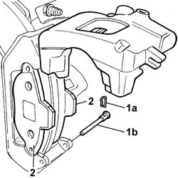
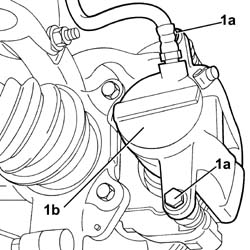
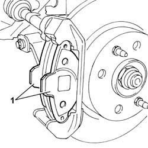

3310A60 front brake pads - replace
- Path
- Procedures > 33 BRAKING SYSTEM > 3310 DISC BRAKES > 3310A FRONT DISC BRAKES > 3310A60 front brake pads - replace
- Kind
- repair procedure (removal / refitting; the operation number is the code)
- Applies to
- all engines; all production periods
- Interactive page
- https://sloeber94.github.io/elrnDB-fPnd/en/#/2752715
Applies to: engines: 1.1, 1.2 8v; all production periods
 Removing
Removing
 Refitting
RefittingPlace the car on a ramp.
4450B12 front or rear wheels (two) - r+r
1. Remove clip (1a) and remove lower pin (1b).
Turn the brake caliper upwards.
2. Remove the brake pads from the bracket and replace them.
Repeat the same procedure for the remaining front brake pads.

Applies to: engines: 1.3 JTD 16v; all production periods
Removing
RefittingPlace the car on a ramp.
Remove the left front wheel.
Remove the right front wheel.
1. Undo the bolts (1a), then move the front brake calipers (1b) away from the work area.

Applies to: engines: 1.1, 1.2 8v; all production periods
Refitting
RemovingMeasure the thickness of the brake pads and check whether the thickness is less than the minimum permissible value.
Fit new brake pads to the bracket.
Turn the brake caliper down and fasten by refitting the lower pin.
Lock the lower pin in position using the clip removed previously.
4450B12 front or rear wheels (two) - r+r
Remove the vehicle from the lift.
Applies to: engines: 1.3 JTD 16v; all production periods
1. Remove the front brake pads from their seatings on the brackets and replace them.

Applies to: engines: 1.3 JTD 16v; all production periods
Repeat the same procedure for the remaining front brake pads.
Applies to: engines: 1.3 JTD 16v; all production periods
Refitting
RemovingFit the front brake pads in their seats on the brackets.
Fit the front brake calipers to the discs and brackets.
Tighten to torque the bolts securing the calipers to the brackets.
 | Fastening | Component | Ø | Value (daNm) |
|---|---|---|---|---|
- | Bolt | FRONT BRAKE CALIPER ASSEMBLY | M10 x 1.25 | 5.7 |
Fit the left front wheel.
Fit the right front wheel.
Remove the vehicle from the lift.